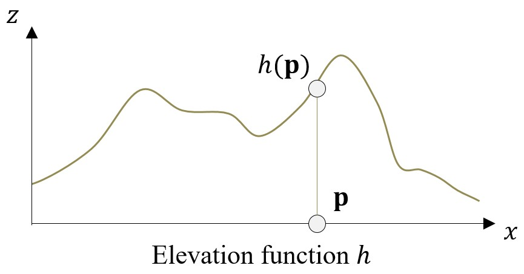
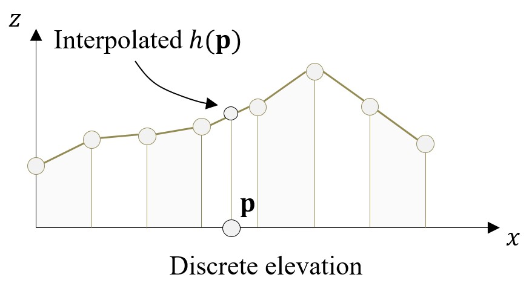
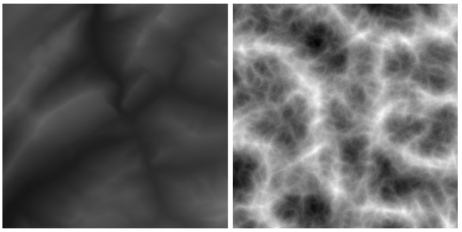

Introduction
There are several ways to represent a terrain on a computer. This choice mainly depends on the target application (video games, scientific simulations), the type of landforms you want to represent (mountain ranges, caves, hills), and the scale at which you work. We first separate terrain representations in two: there are elevation models, and volumetric models. Elevation models are the most popular representation, as they provide a sufficiently accurate approximation while being compact in memory. However, they cannot represent volumetric landforms, such overhangs and arches, which are crucial scenic elements of virtual worlds.
Getting started
In this guide, the main focus is on elevation models. The remainder of this page cover the basic of what is a heightfield, how to represent in memory, and render them on a computer. We will create the base classes and modules that will be used in the next sections. After that, the terrain section is organized in several subsections:
- 🌍 Procedural, which covers everything you need to know on how to use noise functions and combine them to create beautiful terrains.
- 🏔️ Simulation, where you will learn about physically-based algorithms that simulates erosion on a given terrain to increase realism.
- 🪨 Volumetric, where we depart from elevation models and explain how to create underground caves, overhangs, and arches.
Tip
While these have been written to be read in order, you may also jump to a given section, or completely skip some if you feel like it.
Heightfields
Elevation models are also called planar models, or heightfields. Here we only represent the surface of the terrain and forget about the interior. As we will see, this is a powerful approximation particularly suited to terrains. More formally, a heightfield is defined by a mathematical function \(h: \mathbb{R}^2 \rightarrow \mathbb{R}\) that computes the altitude (the z coordinate) of a point \(\mathbf{p}\) in 2D space.

If we were to write the equivalence between this mathematical function and Javascript code, it would look like this:
\(h(\mathbf{p}) : \mathbb{R}^2 \rightarrow \mathbb{R}\)
/**
* Elevation function for a heightfield.
* p: 2D point with x and y members.
*/
function computeElevation(p) {
let h = ...;
return h;
}
Now the remaining question is: how do we write the function \(h\), and its equivalent computeElevation in Javascript? There is no single answer but rather different options depending on what you need. The function \(h\) may be defined from a discrete set of samples or through procedural functions.
Discrete vs Procedural
We consider that the only requirement for \(h\) is that it must compute the altitude of any point in 2D space, which means that there is a common interface between discrete and procedural representations.
Discrete representations are the most common for terrains. Elevation is computed as the interpolation of altitude values stored at discrete points, usually distributed on a regular grid.
Note
Discrete samples usually follow a regular grid pattern for lots of practical reasons, but samples may be distributed in other ways. For instance, it is perfectly valid to distribute samples according to a Delaunay triangulation. This won't be covered in this guide though.

Discrete representations can be easily edited: we only need to modify the elevation stored at the discrete sample points. They are also popular because these samples may be initialized from real data. This type of heightfields is called a DEM (Digital Elevation Model), and represents rasterized terrain data from satellite images.
The requirement for discrete heightfields is that the data must exist somewhere in memory. Depending on the resolution of the grid, this may become impractical. For instance, if we consider that altitudes are stored as 32-bits float (4 bytes), a full resolution \(8k \times 8k\) terrain represents 256mo, which is already pretty large and does not even encompasses colors or other common attributes.
Procedural representations are the complete opposite. Here, we do not explicitely store anything in memory but rely on a mathematical function to compute the elevation at a given point. This function may be constructed in multiples ways, but always indirectly through math and code, as opposed to manually editing a specific point as it is the case with discrete heightfields.
The advantage is that you can theoritically represent infinitely detailed terrains without being limited by memory - you are only limited by the expressiveness of the underlying function. However, a typical downside of procedural models is that they require a lot more computations than discrete models, as the mathematical expression usually involves more operations than the interpolation of discrete samples.
Tip
The memory vs computation tradeoff is a typical one in Computer Graphics, and in Computer Sciences in general. There is no universal answer to which approach you should take. It all depends on your problem setting. But it is important to understand the pros and cons of both approaches.
We will extensively cover how to create beautiful terrains using procedural functions in the next part of this guide.
A Minimalist Implementation
Even though discrete and procedural models differ in many ways, there is a common interface to both that we can abstract to facilitate our work in the next sections. We will first create a BaseHeightField class that contains common functionalities and data.
class BaseHeightField {
// Public members
horizontalExtents = new Vector2(10, 10);
verticalExtents = new Vector2(0, 10);
bboxMin = new Vector2(-5, -5);
bboxMax = new Vector2(5, 5);
constructor(horizontalExtents, verticalExtents) {
this.horizontalExtents = horizontalExtents;
this.verticalExtents = verticalExtents;
this.bboxMin = new Vector2(
-this.horizontalExtents.x / 2.0,
-this.horizontalExtents.y / 2.0
);
this.bboxMax = new Vector2(
this.horizontalExtents.x / 2.0,
this.horizontalExtents.y / 2.0
);
}
// Compute altitude at a given 2D point
// This is where procedural and discrete differ
Elevation(p) {
[...]
}
/*
* Compute the position of a vertex from a virtual grid indices and resolution
* i, j: grid indicies
* nx, ny: grid dimensions
*/
Vertex(i, j, nx, ny) {
let cellDiagonal = new Vector2(
this.horizontalExtents.x / (nx - 1),
this.horizontalExtents.y / (ny - 1),
);
let p = new Vector2(
this.bboxMin.x + i * cellDiagonal.x,
this.bboxMin.y + j * cellDiagonal.y
);
return new Vector3(
p.x,
p.y,
this.Elevation(p)
);
}
}
Note
This class contains redundant data, which is on purposes to speed-up computation and facilitate reading. This is not the most optimal.
We were able to factorize some class members: not matter the representation, a heightfield has three dimensions (two horizontals, one vertical). Another interesting thing that we are able to put here is the Vertex function, which computes a position on the heightfield over a virtual grid characterized by its dimensions. This will be very handy in the next sections when we will create a mesh out of our heightfield.
Tip
An important thing to note is that we need the minimum and maximum elevation of the terrain. No matter the representation, we usually manipulate altitudes in some normalized form, thus the need to transform to world-space at the end of the computation.
Of course, this class is not enough by itself. It is just an abstraction layer that we will now use for both discrete and procedural cases.
For discrete heightfields, we must first transform our world-space point \(\mathbf{p}\) to the space in which our samples live (grid-space), and compute the interpolation between our samples. We will use bilinear interpolation in this example. On the other hand, for procedural heightfields, we need to write the mathematical function that compute the altitude. Here we will use a cosinus, which is of course in no way realistic but still works.
// A minimalist discrete heightfield class
class DiscreteHeightField extends BaseHeightField {
// Size of the 2D data elevation array
nx = 256;
ny = 256;
data = null; // Altitude data
constructor(horizontalExtents, verticalExtents, nx, ny, data) {
super(horizontalExtents, verticalExtents);
this.nx = nx;
this.ny = ny;
this.data = data;
}
/**
* Bilinear interpolation of a set of values.
* a00, a10, a11, a01: values to interpolate.
* u, v: interpolation factors along x/y axis.
*/
Bilinear(a00, a10, a11, a01, u, v) {
return (1 - u) * (1 - v) * a00
+ (1 - u) * (v) * a01
+ (u) * (1 - v) * a10
+ (u) * (v) * a11;
}
// Fetch the elevation data from grid indicies
SampleGrid(i, j) {
return this.data[i * this.ny + j] * this.verticalExtents.y;
}
// Compute the altitude of a 2D point using bilinear interpolation
Elevation(p) {
let d = new Vector2(
this.bboxMax.x - this.bboxMin.x,
this.bboxMax.y - this.bboxMin.y
);
let q = p.clone();
q.sub(this.bboxMin);
let u = q.x / d.x;
let v = q.y / d.y;
// Scale
u *= (this.nx - 1);
v *= (this.ny - 1);
// Integer coordinates
let i = Math.floor(u);
let j = Math.floor(v);
// Local coordinates within cell
u -= i;
v -= j;
return this.Bilinear(
this.SampleGrid(i, j), this.SampleGrid(i + 1, j),
this.SampleGrid(i + 1, j + 1), this.SampleGrid(i, j + 1),
u, v
);
}
}
// Minimalist procedural heightfield class
class ProceduralHeightField extends BaseHeightField {
constructor(horizontalExtents, verticalExtents) {
super(horizontalExtents, verticalExtents);
}
// Compute the altitude of a 2D point procedurally
Elevation(p) {
return Math.cos(p.x) + Math.cos(p.y);
}
}
You probably noted that the discrete heightfield class is much longer than the procedural one. The difference is that the provided code works for any set of data stored on a regular grid, while the procedural function must be modified in its mathematical expression if you intend to modify the output, even slightly.
Rendering a Heightfield
So far we mostly talk about the internal representation of a heightfield, let it be discrete or procedural. But since we are doing Computer Graphics, we need a way to render these heightfields on the screen. As always, we have multiple options for that.
Polygonization
The classical way is to create a 3D mesh from the heightfield, and render it using traditional rasterization. Because we manipulate grid-based heightfield, it is straightforward to create a triangle mesh for it: each cell can be represented using four vertices and two triangles. You can think of this as a subdivided plane mesh. The code for this is the following:
/**
* Basic 3D triangle mesh data structure.
*/
class Mesh {
vertices = null;
normals = null;
triangles = null;
constructor(vertices, normals, triangles) {
this.vertices = vertices;
this.normals = normals;
this.triangles = triangles;
}
}
/**
* Create and return a 3D mesh representing a heightfield, with vertices, normals, and triangles.
* hf: heightfield, which should provide a Vertex(x, y) function.
* nx, ny: discretization of the desired mesh along x/y axes.
*/
CreateHeightFieldMesh(hf, nx, ny) {
var vertices = [];
var normals = [];
var triangles = [];
// Create vertices
for (var i = 0; i < nx; i++) {
for (var j = 0; j < ny; j++) {
vertices.push(hf.Vertex(i, j, nx, ny));
normals.push(new Vector3(0, 0, 0));
}
}
// Compute triangle indices
for (var i = 0; i < nx - 1; i++) {
for (var j = 0; j < ny - 1; j++) {
// Triangle 1
triangles.push(i * ny + j);
triangles.push((i + 1) * ny + j);
triangles.push((i + 1) * ny + j + 1);
// Triangle 2
triangles.push(i * ny + j);
triangles.push((i + 1) * ny + j + 1);
triangles.push(i * ny + j + 1);
}
}
// Compute normals from triangles
for (var i = 0; i < triangles.length; i += 3) {
let a = vertices[triangles[i + 0]].clone();
let b = vertices[triangles[i + 1]].clone();
let c = vertices[triangles[i + 2]].clone();
let ba = b;
ba.sub(a);
let n = ba.cross(c.sub(a)).normalize();
normals[triangles[i + 0]].add(n);
normals[triangles[i + 1]].add(n);
normals[triangles[i + 2]].add(n);
}
for (var i = 0; i < normals.length; i++) {
normals[i].normalize();
}
return new Mesh(vertices, normals, triangles);
}
Tip
Creating a mesh is possible for both discrete and procedural representations discussed so far. The only requirement is that the heightfield should provide a function to compute the altitude of a 2D point. However, note that by discretizing a procedural heightfield, we loose the compact memory aspect.
As mentioned before, creating a triangle mesh has a cost regarding memory: you need to explicitely store vertex and triangle data on the GPU. Thus, if your discretization is high, the memory impact will also be high, which can be a limiting factor.
Note
Note that the resolution of our discrete heightfield has no connection with the resolution of our mesh: we can completely create a 1024x1024 mesh out of a 256x256 heightfield thanks to interpolation. However, this may lead to visual artifacts, especially when using only bilinear interpolation.
Sphere tracing
An alternative which shines best for procedural representations, is to avoid the creation of a 3D mesh and render the terrain directly using raymarching or sphere tracing. While being theoritically elegant and simple to implement, this is however less adapted to current graphics and physics pipelines which mainly work with triangle meshes. For a procedural heightfield, another downfall is that the rendering performance is directly tied to the complexity of the underlying function, which can quickly get really complicated.
Note
There are many ways to optimize the evaluation of a procedural function (for heightfields, or more generally implicit surfaces), including bounding volume hierarchies, expression simplification, and many others. The guide may be extended to include these in the (long-term) future.
In this guide, we will mostly use the triangle mesh representation and work with heightfields of relatively low resolution. When appropriate, a slider to modify the grid discretization will be exposed.
Interactive Example
All sections in this guide will be illustrated with figures and interactive examples thanks to Three.js. The one below uses the classes created in this page, and shows both discrete and procedural heightfields rendered as 3D meshes. The discrete version is initialized from a small DEM of the french alps. Move around the scene with the mouse!
Appendix: Storing Heightfields as Images
A typical way of storing heightfield data on a disk is to use images, which makes complete sense because we store a single elevation value for each grid sample. You can find many examples of this online, as DEMs are typically shared as PNG files. However, an image only provides incomplete information about a terrain: there is no way to know the world space extent nor the altitude range. It is thus not unusual to see online posts with terrains exaggerated vertically or horizontally. This is a good reminder that terrains are not images.

Example of images representing terrains, with no way of telling what is the actual horizontal and vertical extents. Left is a DEM of the Alps with a 12km horizontal extent, and a altitude range of [205, 4805] meters. Right is a procedural ridge noise baked with no real world-space dimensions.
There is no real solution to this problem, except that you should provide additional information alongside the image file of your heightfield. Image files are still vastly used because they are easy to share and can be opened and edited using various softwares.
Appendix: Going further
Different models were developed throughout the years to represent a terrain on a computer - for the discrete case we covered regular heightfields, which are the most popular representation, but there are others:
- Hexagon and triangular fields [Dixon et al. 1994]
- Combinatorial maps [Crespin et al. 2014]
Associated files
Files associated with this page are available here.